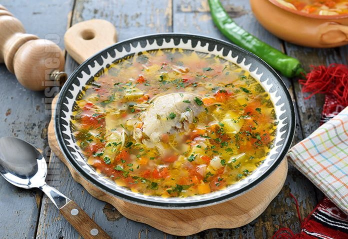

Ciorba

Descriere
Ciorba (din turcă çorba) reprezintă în bucătăria tradițională românească
unul dintre felurile principale de mâncare care se servesc la dejun
(rareori la cină) la începutul mesei, după gustare. Ciorba este denumirea
supelor naționale românești, moldovenești, sârbești, macedonene și
bulgare.
Ingrediente
- 3 litri apa
- 2 cepe
- 1 telina
- 1 pastarnac
- 2 morcovi
- 1 cartof mediu
- 1 ardei gras
- 1 legatura patrunjel verde
- 1 legatura leustean
- 500ml bors
- sare
- piper
Pasi de urmat
- Fierbe apa
- Adauga legumele in apa
- Amesteca zeama si las-o la foc 30 de minute
-
Taie marunt patrunjelul si leusteanul si adauga verdeturile in ciorba